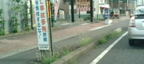
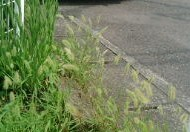

Free talk 雑談 .
（361）麻雀の知恵
麻雀といってもマージャン，Majān，Mahjong の話ではない。これは中国語での麻雀、すなわち日本で云うスズメの話。(^-^；
先日の朝 郊外の道を走行中、赤信号で停車。トラックのお尻を見ていても仕方ないので、ボンヤリと外を見ると 歩道際の雑草あたりにスズメが数羽。
こんな感じの道
ボ～と見ていると、ピョンピョンしていた１羽のスズメが１本の雑草の茎の部分にヒョイと乗っかった。当然 雑草は押し倒される。そのまま２，３歩 ピョンピヨンと穂先までゆき 稲穂に似た穂先をついばみ始めた。オウ？と思って見ていると、別のスズメも隣の雑草を同じように押し倒した。
こんな感じの雑草
ふぅん...と思ったところで、信号が青に変わった。もっと見ていたかったが、しょうがないので そのまま発進。たぶん２羽めのスズメも同じようにしたと思われ。以前 象が樹木を押し倒して葉を食べる映像をみたことあるが、スズメも同じ方法でエサをとっていたとは。（なるほろ～）と、野生動物の知恵に感心した次第。(^-^；